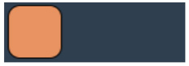
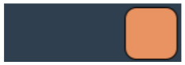

Задача 1. Выведите координаты мыши относительно блока в момент движения курсора мыши внутри блока. Координаты выводить под блоком.
Coordinates:
Задача 2. Создайте блок div, в качестве изображения фона установите ему изображение закрытой папки. Добавьте событие, которое выполняется при двойном клике на блоке и заменяет фон блока на изображение открытой папки.
Задача 3. Добавьте в документ 300-400 блоков div квадратной формы с размерами сторон 30px, и цветом фона. Добавление элементов выполните с помощью цикла. Добавьте событие при наведении мыши, которое будет скруглять данные блоки с помощью border-radius до круга. (Для замедления эффекта скругления в CSS можно добавить transition).
Задача 4. Создайте div размерами ширина – 100%, высота 250px. Ниже добавьте 4-5 изображений с одинаковыми классами, разного размера. Добавьте событие, которое будет при клике на изображении устанавливать его фоном блока div со свойством background-size: contain.
Задача 5. Создайте блок размерами 50x50px. Добавьте событие клик, так, что при каждом клике на блоке он отодвигается на 100px вниз от предыдущего положения.
Right click = 100px right, Left click = 100 px left (так визуально лучше)
Задача 6. РЕАЛИЗУЙТЕ ТРИГГЕР ПЕРЕКЛЮЧАТЕЛЬ Реализуйте триггер переключатель следующего вида:
При загрузке переключатель находится в первом положении.
При клике, он переходит в положение два (средняя картинка), а в консоль
выводится цифра 1.
При следующем клике переключатель переходит в состояние три (нижняя
картинка), а в консоль выводится цифра 2.
При следующем клике, переключатель переходит в состояние 1 (верхняя картинка), а в консоль
выводится 0.
Result: